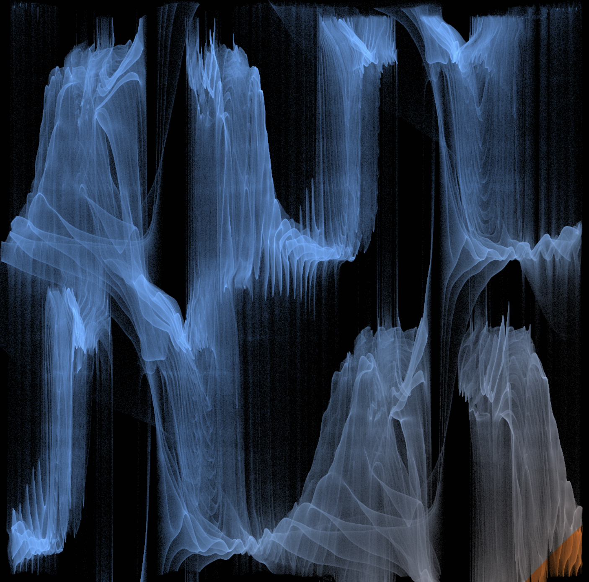
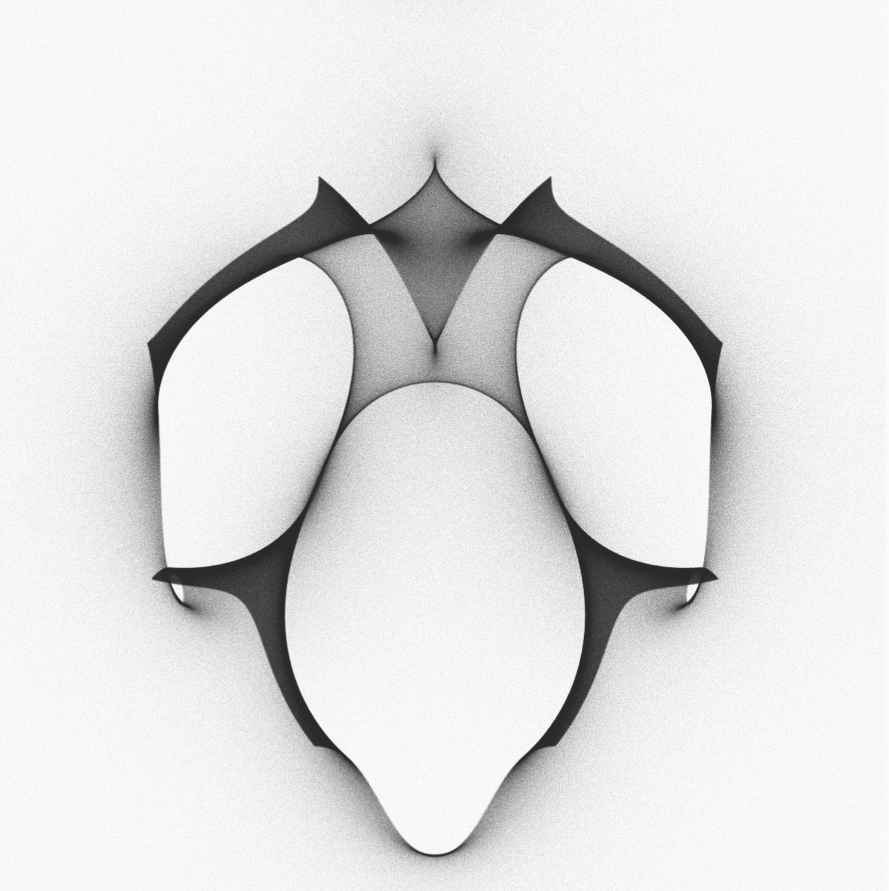
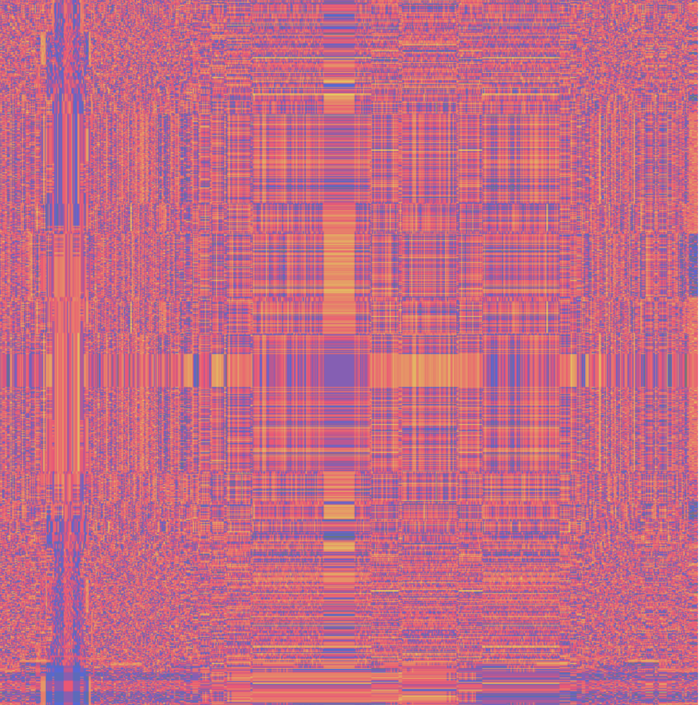
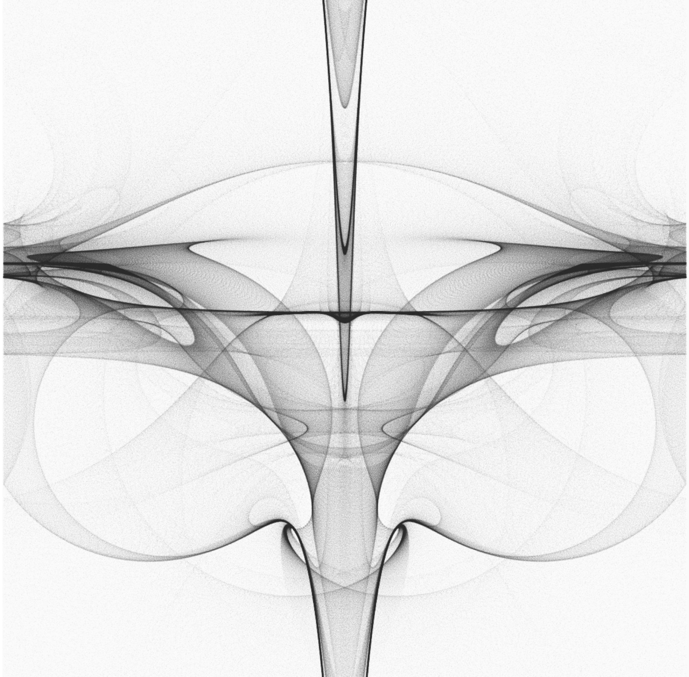
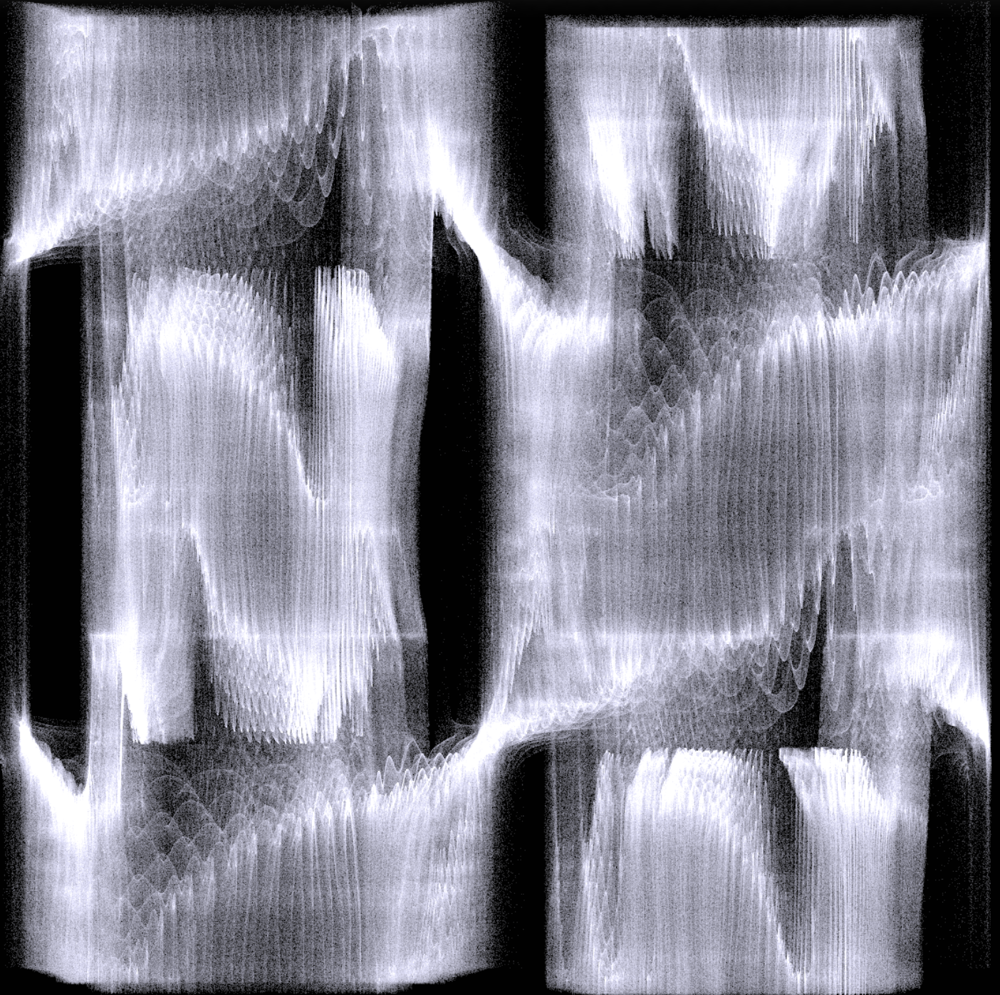

Sewon Myung
I am currently an undergraduate student at Georgia Tech studying mathematics.
My research interests lie in geometry, topology, combinatorics, and their applications in computation.
Outside of mathematics, I am interested in art and design.
Contact: smyung6 [at] gt [dot] edu
Mathematical Research
Geometric Generative Modeling on Manifolds - ongoing
Investigating generative models defined on Riemannian manifolds and discrete geometric structures. Current focus includes score-based diffusion processes on curved spaces, conformal generative modeling on triangulated surfaces, and Laplacian-based kernels on cellular complexes.
Reading Lou et al. (Scaling Riemannian Diffusion Models)
Reading Dorobantu et al. (Conformal Generative Modeling on Triangulated Surfaces)
Reading Alain et al. (Gaussian processes on cellular complexes)
Directed Reading: Knot Sliceness & Low-Dimensional Topology
Semester-long directed study on knot sliceness and 4-manifold topology, centered on Lisa Piccirillo’s 2020 proof that the Conway knot is not slice. Worked through the geometric and algebraic techniques underlying the argument, including constructions in smooth 4-manifold theory, and presented findings in a formal talk.
link
Computational Geometry
Matrix Stack & Projection Pipeline Implementation
Built a custom 3D transformation system from scratch in Processing using 4×4 homogeneous matrices, implementing translation, rotation (X/Y/Z), scaling, and hierarchical composition via a matrix stack.
Developed both orthographic and perspective projection routines, manually performing world-to-screen coordinate transformations without relying on built-in OpenGL functions.
link
Single-Image 3D Reconstruction Study
Implemented a neural network pipeline to reconstruct 3D geometry from a single 2D silhouette image using voxel-based representations. Designed a 2D CNN encoder to map 128×128 inputs to a 512D latent space and a 3D transpose-convolution decoder to generate a 32³ occupancy grid. Extracted meshes using Marching Cubes and evaluated performance on ModelNet10 and ShapeNet datasets.
link
Creative Technology
CuraLink: Alzheimer's Assistance
Developed an AI-powered vision system for Alzheimer’s care integrating real-time face recognition (InsightFace), object detection (YOLOv8), and context-aware narration. Built a multimodal pipeline with camera input, voice interaction, and OpenAI-based orchestration to provide environmental awareness, identity recognition, routine assistance, and emotional support.
link
Easel: AI Art Teacher
Developed a website-based AI art critic using the OpenAI API and LangChain to provide structured, technique-focused feedback grounded in composition, perspective, lighting, and form.
Additionally explored computer vision techniques for image analysis using TensorFlow.
link
Algorithmic Art
A collection of algorithmic artworks developed in Processing, exploring structure, symmetry, and emergent form. Many pieces are generated using iterative dynamical systems, including Julia sets and hyperbolic transformations, and rendered via log-density mapping techniques.
View gallery
For more, check out my github.
A collection of visual work, experiments, and projects developed over time.





